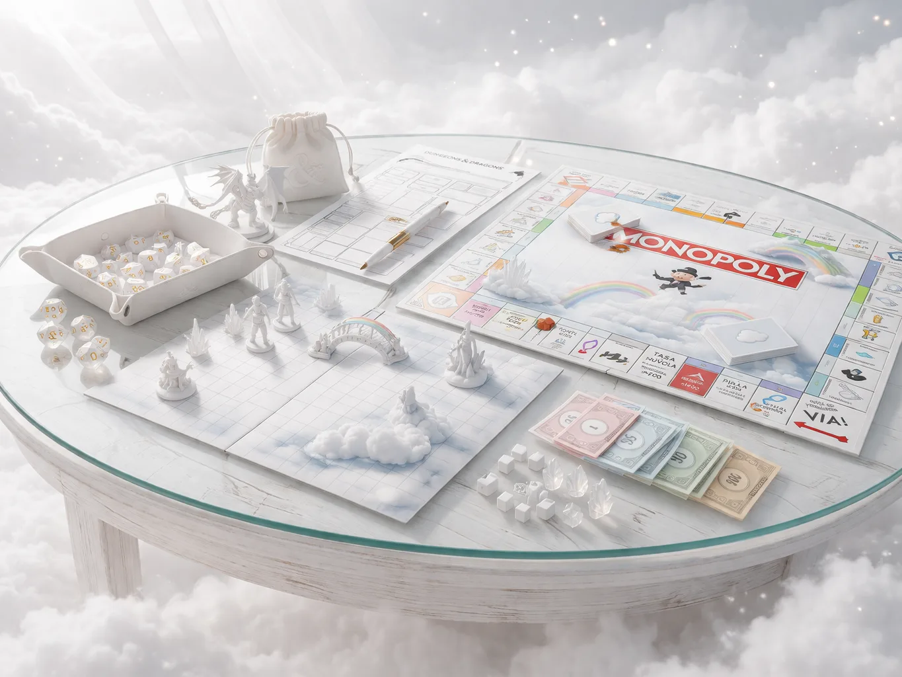

Il Tavolo da Gioco
Questo piccolo angolo di questo mondo è nato per la necessità di costruire qualcosa di nuovo insieme a te. Qualcosa che ci potesse lasciare dei bei momenti insieme, dei ricordi, delle risate, o perché no anche qualche momento più triste, qualche scelta difficile ma che potesse magari lasciare quel pensiero "wow una bella esperienza". È nato in un tempo in cui era difficile parlare, un tempo dove eravamo divisi e sembrava impossibile poterci unire di nuovo. Poi lo sai, da allora le cose sono state diverse, alla fine i giochi sono diventati un po' una parte di noi, il monopoly, scarabeo, plato, the mind, quello della bomba e chi più ne ha più ne metta. Quando giochiamo sembriamo sempre tornare un po' quelli che siamo sempre stati, un po' più piccoli, un po' più noi, un po' più legati e forse a volte un po' più innamorati. Spero che questa parte del mondo potrà essere utilizzata molto un giorno, e che diventerà ancora il nostro piccolo rifugio, anche in questi momenti dove ormai si sta un po' spegnendo tutto
Il tavolo